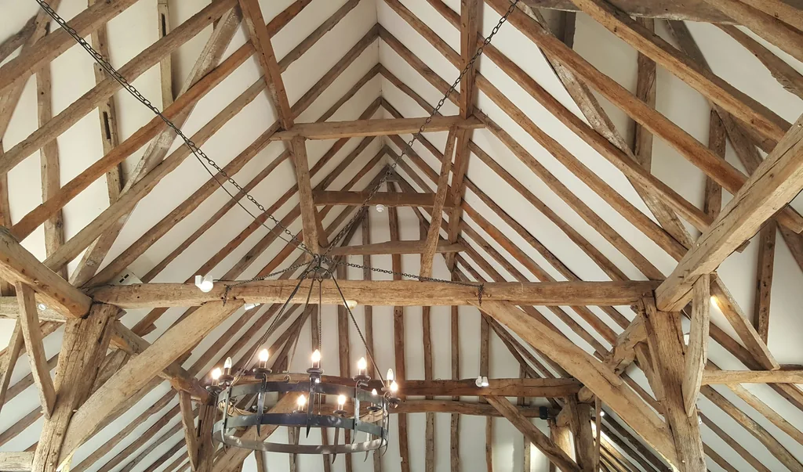

Je suis Julien
J’exerce dans le bâtiment depuis 12 ans et travaille seul au sein de 2JBF. Je réalise surtout des travaux de rénovation pour les particuliers, en charpente, en couverture et en ossature bois.

Le bâtiment guide mes choix
En rénovation, je m’appuie sur la configuration du bâtiment pour définir les travaux. Je veille au soin de la réalisation et au respect de l’existant, tout en vous conseillant sur le projet.
Tout commence par un rendez-vous
Un premier échange par téléphone ou SMS nous permet de préciser les travaux à envisager et de convenir d’un rendez-vous. Une visite sur place est organisée selon le projet, avec un diagnostic avant les travaux de charpente. Le devis est gratuit et envoyé en moyenne sous deux semaines.
Préparer le chantier avec vous
Après acceptation du devis, nous planifions les travaux ensemble, selon les disponibilités. Un acompte est demandé.
Je protège les abords du chantier et je nettoie les lieux en fin de travaux. Nous faisons ensuite la réception ensemble. L’évacuation des déchets et l’envoi de photos sont prévus selon le chantier.
Mes assurances
Je suis couvert par une assurance décennale et une responsabilité civile professionnelle.
Commençons par un échange
Pour une petite intervention ou une rénovation plus importante, parlons de vos travaux par téléphone ou par SMS.